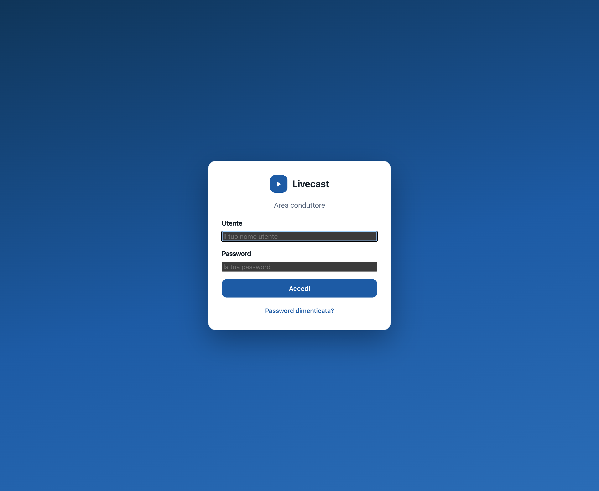
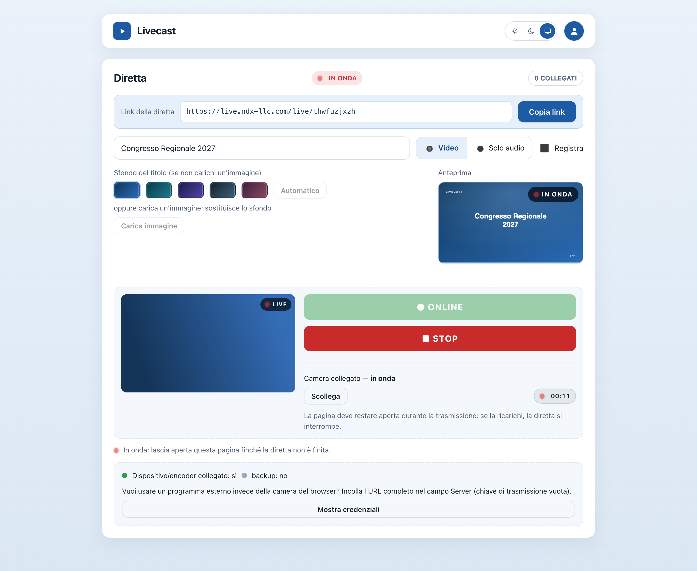
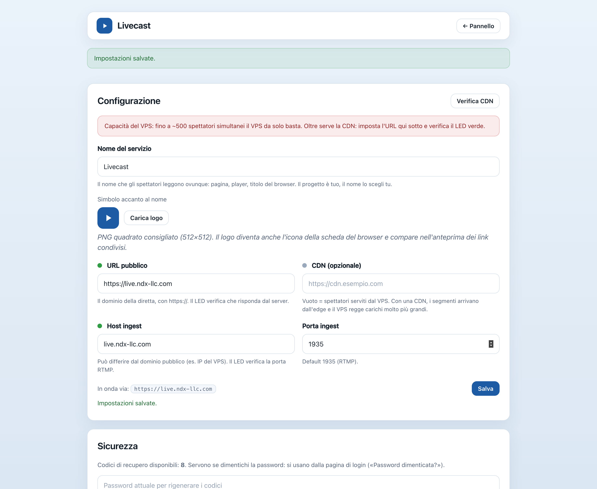
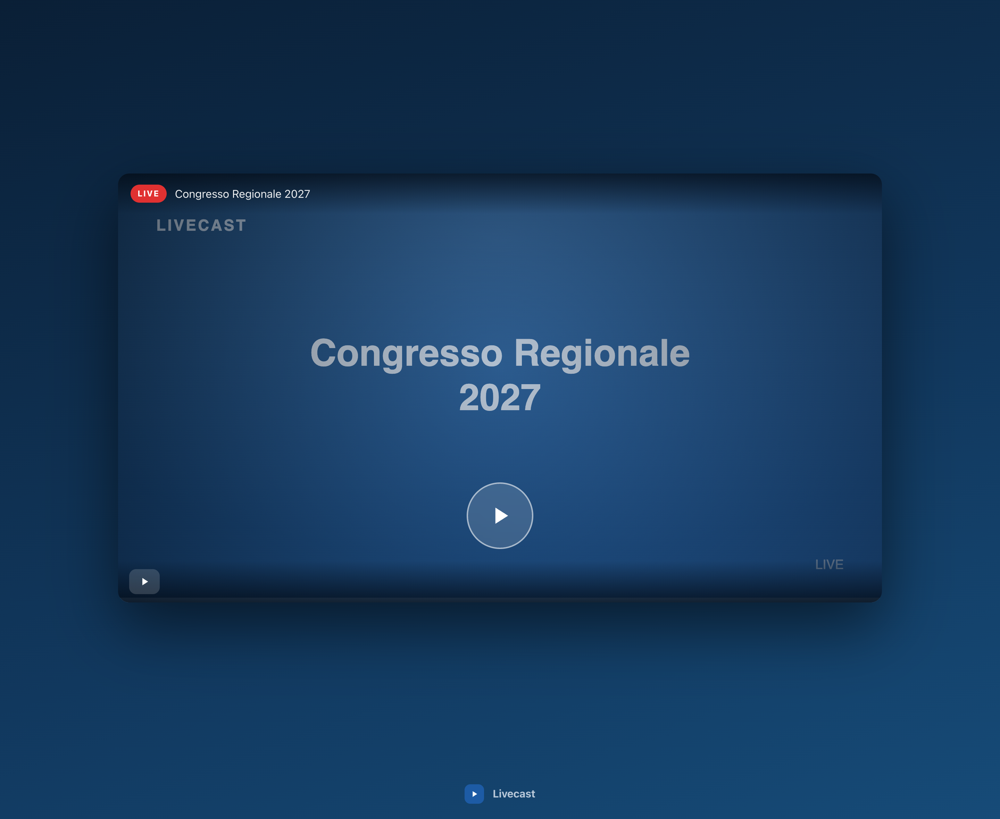
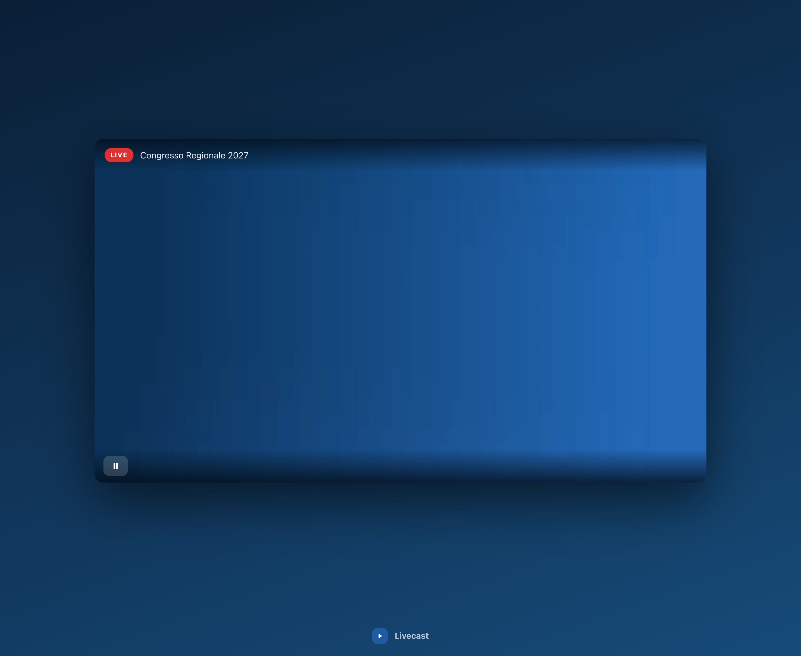
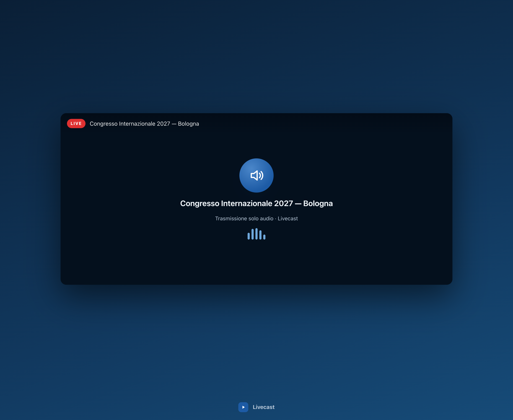

Come configurare una diretta, in modo semplice.
Il flusso, semplificato:
Il software è libero (MIT) e può essere rinominato: nome, colori e immagini si cambiano dal pannello, senza toccare il codice.
Guida rapida · versione 1.0 · https://github.com/sdagostino777/livecast
Da GitHub: pulsante verde Code → Download ZIP (va bene anche da telefono, poi carichi lo ZIP sul server). Da terminale:
curl -L https://github.com/sdagostino777/livecast/archive/refs/heads/main.tar.gz -o livecast.tgz
tar xzf livecast.tgz && cd livecast-main
Nel terminale del tuo server (Hostinger → VPS → Terminale, come root), dentro la cartella appena scompattata, scrivi:
bash install.sh live.tuodominio.it
Installa da solo server video, encoder, i servizi che si riavviano dopo un guasto, HTTPS gratuito, firewall e l'utente admin. Non serve altro: niente programma esterno obbligatorio, niente file da modificare a mano.
3. Primo accesso: apri https://live.tuodominio.it/admin, utente admin, password admin. Il pannello ti obbliga a cambiarla subito: scegline una di almeno 12 caratteri e sei dentro.
Apri il link del pannello, inserisci utente e password. In alto a destra trovi tre iconcine per il tema (chiaro, scuro, sistema) e il pulsante del profilo (l'omino), da cui si aprono Impostazioni ed Esci.

1. Schermata di accesso.
Nel riquadro Diretta scrivi il titolo — per esempio Congresso Regionale o Evento semestrale — scegli Video o Solo audio, carica se vuoi l'immagine evento (e spunta «Mostra il nome sopra l'immagine» se vuoi il titolo in sovrimpressione). Non c'è niente da salvare: ogni modifica si applica subito e l'anteprima si aggiorna mentre scrivi. Quando sei pronto premi ● ONLINE.
Il link della diretta è lì sopra, con Copia link: puoi già mandarlo, perché chi lo apre vede il nome dell'evento e l'immagine anche prima che tu vada in onda. A fine serata Nuovo evento crea l'evento successivo con un link nuovo.

2. Pannello con la diretta in onda: stato, link, anteprima e regia.
Non hai un'immagine? Nessun problema: il sistema ne crea una automaticamente con il titolo dell'evento su uno sfondo a gradiente (blu notte, petrolio, indaco…). La sostituisci quando vuoi con «Carica immagine».
Dal pulsante del profilo scegli Impostazioni. La pagina raccoglie tutto ciò che è del servizio, non dell'evento:
Il tema non sta qui: le tre iconcine in alto a destra lo cambiano al volo. L'immagine dell'evento e la spunta «Mostra il nome dell'evento sopra l'immagine» sono nel riquadro Diretta, insieme al titolo.

3. Impostazioni: nome, logo, URL pubblico, CDN e ingest; sotto, sicurezza, utenti, manutenzione.
Due modi, nessun programma obbligatorio. Nel pannello, sotto la diretta, trovi Collega camera e Collega schermo: mostrano l'anteprima e collegano il browser al server, ma nessuno spettatore ti vede finché non premi ● ONLINE. La pagina deve restare aperta durante la trasmissione: se la ricarichi, la diretta si interrompe. Per eventi lunghi conviene programma esterno, che riconnette da solo — qui sotto come si configura.
Con programma esterno: nel pannello premi Mostra credenziali e copia l'URL completo del server. In programma esterno → Impostazioni → Trasmissione:
Premi Avvia trasmissione in programma esterno: in pochi secondi il pannello passa a In onda e parte il cronometro del tempo in onda. Accanto allo stato leggi quanti sono collegati in quel momento. Copia il link e condividilo: su WhatsApp compare già l'anteprima con il nome dell'evento e l'immagine. Gli spettatori vedono il poster e il pulsante play: da lì solo play e pausa.

4. Prima del play: nome e immagine dell'evento, poi solo play.
Durante la diretta: play e pausa, il badge LIVE e il titolo. Niente altro — ogni comando in più è un'occasione di errore su un telefono in mezzo a una folla. In basso il nome e il logo del servizio: se li cambi dalle impostazioni, cambiano anche qui.

5. Il player: solo play e pausa, come deve essere.

6. Una diretta «Solo audio»: stessa semplicità, con la card audio.
Quando imposti (o reimposti) la password, il sistema genera 8 codici di recupero e li mostra una sola volta. Copiali o stampali: sono l'unico modo per rientrare da soli se dimentichi la password.
38247-FA538 · 890E4-A0BB6 · 28537-304BB · AA636-54122
D13F4-A3352 · F8FBC-E02C8 · C8454-86EE7 · EB5DC-70BEF
Esempio di come appaiono. I tuoi saranno diversi: salva i tuoi.
Se perdi anche i codici: chi amministra il server reimposta la password dalla riga di comando. Il comando stampa anche 8 codici nuovi:
cd /srv/livecast/app
node --env-file=.env apps/api/dist/cli.js reset-password --username admin --password admin
Nel database i codici sono salvati solo come impronta crittografica (hash): non è possibile risalire al codice in chiaro, nemmeno da parte dell'amministratore del server.
Quanti spettatori regge il VPS? Fino a ~500 simultanei basta il VPS da solo. Oltre serve una CDN: nel pannello → Configurazione inserisci l'URL della CDN e controlla che il LED accanto diventi verde. Con la CDN gli spettatori caricano i video dall'edge e il VPS resta leggero.
5. In onda: il punto rosso lampeggiante e il pulsante STOP restano sempre visibili.
README (inglese) · docs/RUNBOOK.md (operatività, CDN, soccorso) · docs/CDN.md (Bunny CDN passo passo) · docs/guides/guide-en.pdf (questa guida in inglese).